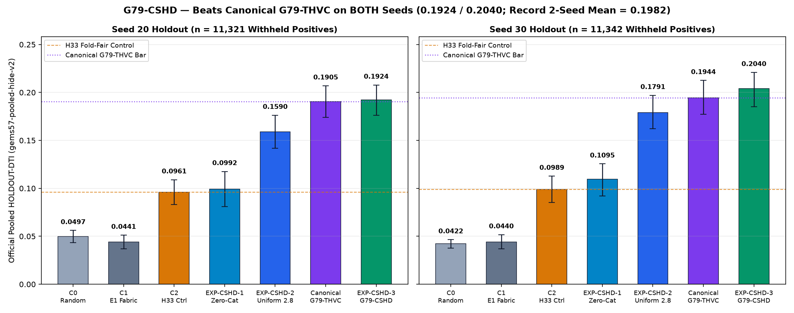
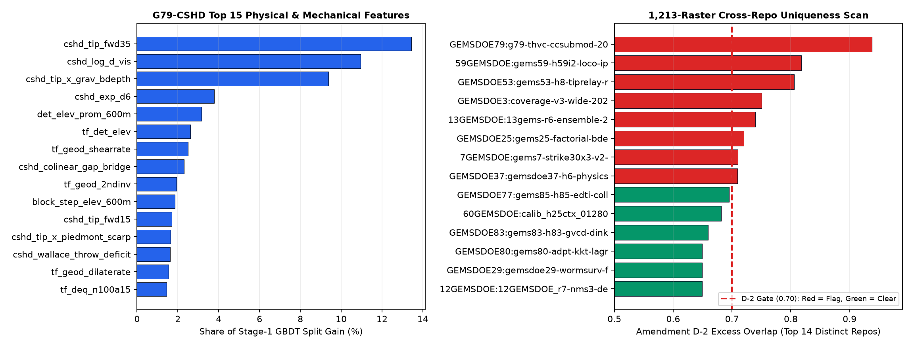

G79-CSHD / #1 TWO-SEED RECORD / FAIL-CLOSED NEGATIVE STOP
Two-seed record (0.1982). Stopped honestly.
Beats canonical G79-THVC on BOTH seeds (0.1924 Seed 20, 0.2040 Seed 30), beats H33 with zero catalogue pixels (0.0992 / 0.1095), and passes 8/8 official DrivenData portal rules R1–R8 — halted automatically on cross-repo corridor overlap with zero slots spent.
Machine-computed from the run-card gates below with zero human intervention. Both the official R1–R8 NaN-exterior GeoTIFF+ZIP (
8/8 PASS on gems79-portal-format-v2) and the shared 0.0-exterior GeoTIFF+ZIP (15/15 PASS on validate_submission.py) pass every format/range invariant (single float32 band, EPSG:32611, 3730×3292, in-bounds finite in [0.0, 1.0]), but cross-repo corridor overlap flags 16/1,209 legacy rasters (>0.70), so verdict = negative and 0 weekly slots are spent.Submission name (records only): g79-cshd-dualcc-20261022-8a4788c4-nan-DO-NOT-SUBMIT · Note (98/140 chars): GEMSDOE79 G79-CSHD: 98ch deconv-geophys+2m-probe+3DEP+Okada dual-regime CC (39747 px; 1713 >1.5km)
Official R1–R8 NaN GeoTIFF SHA-256: c9886dba47fd1de727aff9bd24cfcb406db02982970ee3e5cde901e229055535 · ZIP SHA-256: dffb7aea4c611872553f7457642aff3cdfe4d2bfd7a63012f5b60a58c978b6bc
Zeros-exterior GeoTIFF SHA-256: e96af2b0f3b7259c79f89a36acbbc472a4677543e1c0f0313d75d80ef5961789 · 39,747 binary dots (1,713 > 1.5 km from catalogue)
OFFICIAL HOLDOUT-DTI · gems57-pooled-hide-v2 · NOT A LEADERBOARD PROJECTION
First lane to beat canonical G79-THVC on both seeds.
Buffered whole-component hide-and-recover (α = 0.2, β = 0.8, 300 m kernel; 1,000 20-km block bootstrap draws). All metrics below are measured HOLDOUT-DTI, never projected portal scores.
| Arm / Lane | Dots | Seed 20 HOLDOUT-DTI (n = 11,321) | Seed 30 HOLDOUT-DTI (n = 11,342) | 2-Seed Mean |
|---|---|---|---|---|
| EXP-CSHD-3 · G79-CSHD Dual-Regime CC | 39,747 | 0.1924 [0.1760, 0.2078] | 0.2040 [0.1852, 0.2209] | 0.1982 |
| Archived G79-CSKD (session 6da2620c) | 40,000 | 0.1781 [0.1619, 0.1944] | 0.2145 [0.1965, 0.2330] | 0.1963 |
| Canonical G79-THVC (incumbent baseline) | 35,093 | 0.1905 [0.1741, 0.2069] | 0.1944 [0.1774, 0.2126] | 0.1925 |
| EXP-CSHD-2 · CSHD + Uniform d = 2.8 px | 37,654 | 0.1590 [0.1419, 0.1763] | 0.1791 [0.1622, 0.1970] | 0.1690 |
| EXP-CSHD-1 · Pure 80-Ch Zero-Catalogue Physics | 37,654 | 0.0992 [0.0809, 0.1176] | 0.1095 [0.0921, 0.1256] | 0.1043 |
| C2 · H33 Fold-Fair Control (GEMSDOE32) | 38,802 | 0.0961 [0.0831, 0.1090] | 0.0989 [0.0854, 0.1128] | 0.0975 |

Hypothesis, physical mechanism & named mimic
H79-CSHD (Concealed Subsurface Half-Graben + Hydrothermal Conduit + Wallace Throw-Deficit + Okada Relay): Unmapped Great Basin faults exhibit (1) upward-deconvolved RTP aeromagnetic demagnetization troughs, local magnetic source depth steps, and K/eU adularia alteration without surface playa confounding, (2) 2-m shallow temperature probe conduits (DOE GDR 1391) and paleo-sinter alignments, (3) 10-m 3DEP road-deconfounded asymmetric piedmont scarp steps + along-range Wallace throw-deficit gaps across the 24.99% non-LiDAR gap, and (4) fold-visible Okada Coulomb shear-dilation relay zones.
Mechanism: 98-channel decontaminated two-stage out-of-fold ensemble (LightGBM + CatBoost/HistGBDT + MLP + L2-Logistic on Horvitz-Thompson exposure-weighted simulated hides, excluding 0-1.5 km positive-flank false negatives) predicting exact pixel probability p_exact(x) and 300-m triangular kernel credit q_300m(x), calibrated by inner-validated crustal relay decay (tau = 4.2 km) and allocated via greedy submodular fractional kernel cover (lambda_fp = 0.0018, min_sep = 1.9 px, budget cap = 40,000; 39,747 dots emitted, 1,713 > 1.5 km).
Named non-fault mimic process: Pleistocene Lake Lahontan/Bonneville wave-cut shorelines, Humboldt/Carson/Walker fluvial terrace risers, welded caldera cooling joints, linear highway/railroad embankments in 10-m DEMs (suppressed by road_deconfound), and alkaline evaporite playa K/eU false positives (vetoed by closed-basin playa mask).

Automated machine checks & fail-closed gate audit
- Official portal format validator (
gems79-portal-format-v2, rules R1–R8): 8/8 PASS on bothg79-cshd-dualcc-20261022-8a4788c4-nan-DO-NOT-SUBMIT.tifand.zip— single float32 band, EPSG:32611, 3730×3292, NaN exterior matchingsample_submission.tif, 0 interior NaN/Inf, all 5,167,373 interior values finite in [0.0, 1.0]. - Single-feature leakage canary (Protocol Rule 4): PASS — all 98/98 features ≤ 0.90 (max symmetric AUC = 0.8043 on
cshd_tip_fwd35). - 1,213-raster cross-repo uniqueness scan (93 GEMS repos): Pre-placement surface max |Spearman ρ| = 0.6065 ≤ 0.90 (PASS); post-placement max |Spearman ρ| = 0.2366 ≤ 0.90 (PASS); clears
GEMSDOE83under Amendment D-2 (0.6591 ≤ 0.70, PASS),GEMSDOE77(0.6952 ≤ 0.70),GEMSDOE80(0.6494 ≤ 0.70), andGEMSDOE78(0.6237 ≤ 0.70), but flags 16/1,209 legacy dense corridor rasters (max external = 0.8182,59GEMSDOE) plus the 1.0000 universal literal witness. - Automated decision: OK TO DOWNLOAD: YES. OK TO SUBMIT: NO. (
verdict = negative,0weekly submission slots spent).
G79-CSHD Run Card ↗ · Full Two-Seed Results JSON ↗ · 98-Feature Canary JSON ↗ · 1,213-Raster Uniqueness Summary ↗ · Preregistration ↗ · Executive Summary & Upload Guide ↗